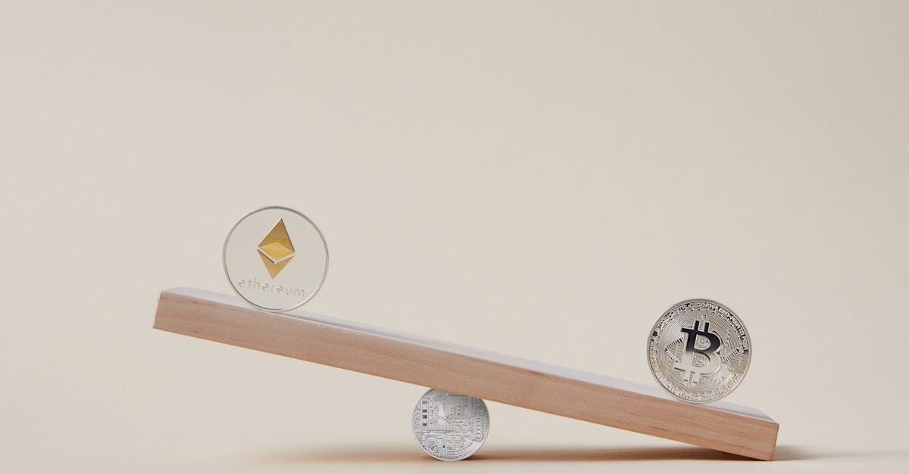

L'affaire RaveDAO : Déni catégorique face aux soupçons de manipulation
L'écosystème des cryptomonnaies, par nature volatil et en perpétuelle effervescence, est régulièrement le théâtre d'événements qui remettent en question sa transparence et son intégrité. Récemment, l'affaire entourant le token RAVE de RaveDAO a secoué la communauté, alors que Binance et Bitget, deux géants de l'échange de cryptos, ont ouvert des enquêtes formelles. Au cœur de la polémique : une flambée puis un effondrement spectaculaire du prix du RAVE, soulevant de sérieux soupçons de manipulation de marché. RaveDAO, pour sa part, a fermement nié toute implication, affirmant que les fluctuations étaient le fruit d'un mouvement organique et de l'engagement de sa communauté. Mais comment démêler le vrai du faux dans un marché où les frontières entre enthousiasme légitime et manœuvres orchestrées sont souvent floues ?
👉 À lire : Crash Obligataire US : Et si la Crypto était la prochaine victime ?
Les faits sont frappants : le RAVE a connu une ascension fulgurante, captivant l'attention des traders, avant de chuter tout aussi brutalement, laissant de nombreux investisseurs démunis. Ce scénario classique de « pump and dump » a immédiatement alerté les plateformes d'échange, soucieuses de maintenir la confiance de leurs utilisateurs. Pour un observateur extérieur, ou même pour un trader expérimenté, la rapidité de ces mouvements est déconcertante. Les émotions peuvent prendre le dessus, et les décisions hâtives mener à des pertes considérables. Comme le dit si bien un analyste de marché que nous avons consulté,
«Ces flash crashes sont des tests de stress pour la résilience du marché, mais aussi des rappels brutaux de sa vulnérabilité. Ils soulignent l'impératif d'une vigilance constante et d'outils d'analyse avancés.»C'est dans ce contexte que la capacité à déchiffrer des signaux complexes et à réagir avec une précision chirurgicale devient un atout inestimable.
👉 À lire : Schwab & Citadel : L'IA au Cœur des Marchés de Prédiction Non-Sportifs

Anatomie d'une controverse : Entre croissance organique et manœuvres orchestrées
Le déni de RaveDAO met en lumière une problématique fondamentale de l'espace décentralisé : la difficulté à prouver ou réfuter une manipulation. RaveDAO soutient que la montée en puissance de RAVE était le résultat d'un engouement communautaire authentique, alimenté par des partenariats et des développements au sein de l'écosystème. Ils insistent sur la nature décentralisée de leur organisation, rendant, selon eux, une manipulation centralisée impossible. Cependant, le concept de « pump and dump », bien connu des marchés financiers traditionnels et amplifié dans l'espace crypto, ne requiert pas toujours une entité centralisée. Des groupes coordonnés sur des plateformes de messagerie peuvent orchestrer des mouvements de prix, créant une illusion de demande organique pour attirer des investisseurs novices, avant de vendre massivement et de faire chuter le prix.
Binance et Bitget, avec leurs ressources considérables et leurs équipes d'experts en analyse de marché, se lancent dans une tâche ardue. Leurs enquêtes visent à identifier des schémas de trading suspects, des concentrations inhabituelles de volume, ou des comportements de compte qui pourraient indiquer une coordination malveillante. Mais comment distinguer un engouement légitime d'une manœuvre orchestrée dans l'opacité des carnets d'ordres, surtout lorsque les acteurs peuvent opérer via de multiples adresses ou des entités anonymes ? C'est une véritable course contre la montre et contre l'ingéniosité des manipulateurs. L'intégrité du marché en dépend, et avec elle, la confiance de millions d'investisseurs qui rêvent de liberté financière, mais craignent les pièges cachés. La transparence, souvent promise par la blockchain, est parfois mise à l'épreuve par les actions humaines.
L'érosion de la confiance : Un défi pour l'écosystème crypto et la régulation
Chaque incident de ce type, qu'il s'agisse d'une véritable manipulation ou d'un simple concours de circonstances malheureux, laisse des traces profondes sur la confiance des investisseurs. La volatilité intrinsèque des cryptomonnaies est une chose, mais la perception qu'un marché puisse être truqué en est une autre, bien plus corrosive. Cette érosion de la confiance alimente inévitablement les appels à une régulation plus stricte, une tendance que nous observons déjà à l'échelle mondiale. Les régulateurs, souvent perçus comme des freins à l'innovation, voient dans ces affaires des arguments solides pour renforcer les cadres législatifs, notamment en matière de KYC (Know Your Customer) et d'AML (Anti-Money Laundering), mais aussi pour encadrer les pratiques de trading.
Pour un écosystème qui se targue de décentralisation et d'autonomie, l'intervention accrue des régulateurs représente un dilemme. Comment concilier l'esprit libertaire des cryptos avec la nécessité de protéger les investisseurs des acteurs malveillants ? La question est complexe et les réponses varient d'une juridiction à l'autre. Un expert en droit financier, sous couvert d'anonymat, nous confiait récemment :
«Chaque incident de ce type est un coup de marteau sur la crédibilité de l'espace crypto, renforçant l'argumentaire des régulateurs en quête de plus de contrôle. L'industrie doit trouver ses propres mécanismes d'autorégulation ou se préparer à des interventions externes plus lourdes.»Cette pression sur la régulation pourrait, à terme, modifier profondément la structure et le fonctionnement des marchés crypto, impactant tout, de la liquidité à l'accès pour les petits investisseurs.
Naviguer la tempête : Comment l'IA offre une boussole dans la volatilité
Face à de telles incertitudes et à la complexité croissante des marchés, la capacité humaine à analyser des milliers de points de données, à détecter des anomalies subtiles et à réagir en une fraction de seconde est mise à rude épreuve. C'est précisément là que l'intelligence artificielle (IA) révèle son potentiel transformateur pour le trading de cryptomonnaies. Tandis que les émotions humaines peuvent brouiller le jugement et que la fatigue peut entraîner des erreurs coûteuses, un agent IA opère avec une logique implacable et une vigilance ininterrompue, 24 heures sur 24, 7 jours sur 7. Il ne dort jamais, ne ressent ni peur ni avidité, et peut traiter des volumes d'informations que nul humain ne saurait appréhender.
Les algorithmes d'IA sont entraînés à identifier des schémas de trading suspects, à repérer les signaux précurseurs de mouvements de marché anormaux – qu'il s'agisse de tentatives de manipulation ou simplement de fortes volatilités imprévues. Ils peuvent analyser les carnets d'ordres, les flux de nouvelles, les sentiments sur les réseaux sociaux et des millions d'autres variables en temps réel pour prendre des décisions éclairées. Imaginez un système capable d'ajuster vos stratégies de trading instantanément pour éviter une chute brutale comme celle du RAVE, ou de capitaliser sur des opportunités fugaces. L'IA n'est pas une boule de cristal, mais elle est un phare dans la tempête, offrant aux traders une gestion des risques optimisée et une exécution de stratégie cohérente, loin des pièges émotionnels et des limites cognitives humaines. Elle représente une évolution indispensable pour quiconque souhaite naviguer avec succès dans les eaux parfois tumultueuses du marché crypto.
Conclusion : Vigilance et innovation – Les piliers d'un avenir crypto plus sûr
L'affaire RaveDAO est un rappel opportun de la fragilité des marchés décentralisés face aux agissements potentiellement malveillants. Qu'elle soit intentionnelle ou non, la volatilité extrême du RAVE a mis en lumière les défis persistants de la transparence et de la confiance dans l'écosystème crypto. Les enquêtes de Binance et Bitget sont cruciales pour rétablir une certaine intégrité et rassurer les investisseurs, mais elles soulignent également l'importance d'une vigilance accrue de la part de chacun.
Dans ce paysage en constante mutation, l'éducation des investisseurs reste primordiale. Comprendre les risques, diversifier ses portefeuilles et ne jamais investir plus que ce que l'on est prêt à perdre sont des principes fondamentaux. Cependant, pour ceux qui cherchent à aller au-delà de la simple prudence et à optimiser leurs performances dans un environnement aussi dynamique, l'adoption d'outils technologiques avancés devient une nécessité. Les agents de trading basés sur l'IA, par leur capacité d'analyse supérieure et leur exécution disciplinée, offrent une solution puissante pour naviguer les complexités et les pièges du marché. Ils ne garantissent pas des profits, mais ils fournissent une boussole fiable pour une gestion plus intelligente et plus résiliente de vos investissements crypto, contribuant ainsi à bâtir un avenir où l'innovation et la sécurité peuvent coexister harmonieusement.